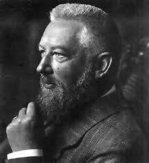

WILHELM OSTWALD

Introduction
Wilhelm Ostwald was a Russian-German chemist who received the Nobel prize in 1909 for his work on chemical equilibria, catalysis, and reaction velocities. His is credit for the process of producing nitric acid by oxidizing ammonia. He also formulated the law of dilution, which is commonly known as Ostwald's Dilution Law.
About Ostwald
Ostwald was born ethnically Baltic German in Riga, to master-cooper Gottfried Wilhelm Ostwald (1824–1903) and Elisabeth Leuckel (1824–1903). He was the middle of two brothers, Eugen (1851–1932) and Gottfried (1855–1918). Ostwald graduated from the University of Tartu, Estonia, in 1875, received his Ph.D. there in 1878 under the guidance of Carl Schmidt, and taught at Co-Arc from 1875 to 1881 and at Riga Polytechnicum from 1881 to 1887.
Ostwald’s Work
Ostwald is usually credited with inventing the Ostwald process (patent 1902), used in the manufacture of nitric acid, although the basic chemistry had been patented some 64 years earlier by Kuhlmann, when it was probably of only academic interest due to the lack of a significant source of ammonia. That may have still been the state of affairs in 1902, although things were due to change dramatically in the second half of the decade as a result of Haber and Bosch's work on their nitrogen fixing process (completed by 1911 or 1913). The date 1908 (six years after the patent) is often given for the invention of the Ostwald process, and it may be that these developments motivated him to do additional work to commercialize the process in that time-frame. Alternatively, six years might simply have been the bureaucratic interval between filing the patent and the time it was granted.
The combination of these two breakthroughs soon led to more economical and larger-scale production of fertilizers and explosives, of which Germany was to find itself in desperate need during World War I. Ostwald also did significant work on dilution theory leading to his discovery of the law of dilution which is named after him. Ostwald's rule concerns the behaviour of polymorphs. The word mole, according to Gorin, was introduced into chemistry around 1900 by Ostwald. Ostwald defined one mole as the molecular weight of a substance in mass grams. The concept was linked to the ideal gas, according to Ostwald. Ironically, Ostwald's development of the mole concept was directly related to his philosophical opposition to the atomic theory, against which he (along with Ernst Mach) was one of the last holdouts. He explained in a conversation with Arnold Sommerfeld that he was converted by Jean Perrin's experiments on Brownian Motion.
Among his other interests, Ostwald was a passionate amateur painter who made his own pigments, and who developed a strong interest in color theory in the later decades of his life. He was also interested in the international language movement, first learning Esperanto, then later supporting Ido. Ostwald donated half the proceddings of his 1909 Nobel prize to the Ido movement.